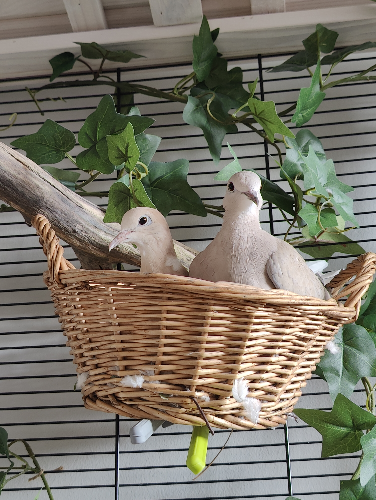
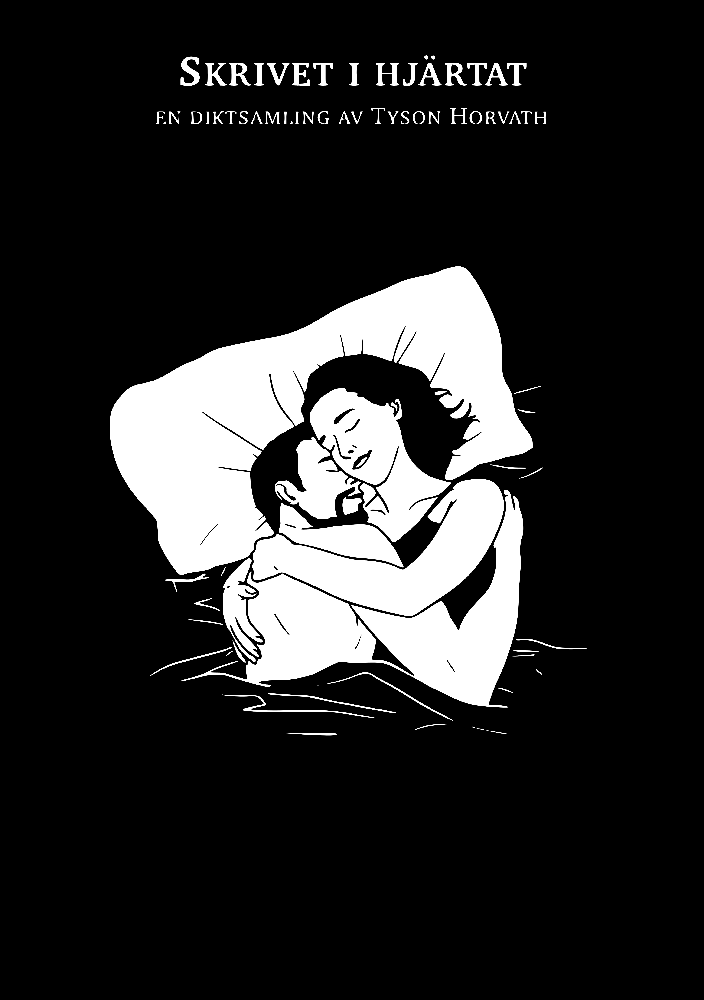

Exciting news! I've landed a job as a Kotlin Android Developer at Opera and, at the same time, signed a contract for a newly built apartment in the heart of Linköping. I'll be moving in on January 1st, and of course, my lovely ring-necked doves will be joining me. As for my roommate? He gets to keep the old apartment. ;-P
What are you doing?
This is a now page. If you have your own site, you should make one, too!
My life is often busy, and I've been somewhat secretive when sharing details with family and friends. I thought this would be a great way to keep everyone updated on what I'm currently doing. I'll do my best to keep this page updated with any new happenings. Thank you, Phillip Ridlen, for inspiring me with your now page!
This was what I was doing as of November 20 2024
This was what I was doing as of October 27 2024
This is what I am doing now
Life 🌟

Education 🎓
I've officially passed the halfway mark of my Master's thesis work at Opera! My examiner's feedback has been largely positive, and the university seems confident that the project is on the right track. That said, there's still plenty to do on the report. In December, I plan to implement two more features before finalizing and sending out the interview questions to my colleagues.
I'm also taking some side courses in internet technology and security at other universities, as well as two game development courses. Overall, things are going well, though I have to admit the game development courses are the most stressful — they aren't my top priority right now.
Work 💼
It's official! I'll be joining the Mini Pay team at Opera as a Kotlin Android Developer, starting in the third week of January. I'm incredibly excited to kick off my career!
Organizations 🏢
My ethical hacking organization is more active than ever! Recently we hosted a lecture and a CTF hackalong at GOTO10. We're also planning our own CTF event, set to take place in March next year. In addition, we're planning bi-monthly hacking workshops and monthly lectures starting this December. We've met with Lysator to discuss potential collaborations on both fronts.
As Editor-in-Chief of LiTHanian, I'm thrilled to share that we've sent our first issue to the printing company! I'm incredibly proud of my team for making it happen. Meanwhile, we've already started working on the next issue, which will have a Valentine's Day theme.
Hobby Projects ⚙️
For me, having hobbies outside of studying and working is very important. My main hobbies are programming, photography, music, and writing.
It's been a hectic month! I spent a week in Hungary and am now in India, which hasn't left me much time to focus on hobby projects — especially programming.


With all the traveling I've been doing, I actually have some more “professional” pictures this time around.

I've decided to officially publish my poetry collection, so I've been spending countless hours preparing for that. I'll share an image of the cover as it looks right now. The collection features over 100 pages and 10 illustrations. I've also ordered some test prints, and once they arrive, I'll publish the book and share an update here!
Expert Progress 📈
The concept of reaching 10,000 hours to become a professional or an expert in a field is derived from Malcolm Gladwell's book "Outliers: The Story of Success" Gladwell popularized the idea that achieving a high level of proficiency in any field typically requires about 10,000 hours of dedicated practice. This notion is based on the research of psychologist Anders Ericsson, who studied the practice habits of elite performers in various domains.
I've been tracking my programming time since 2019, so these numbers are based on that data. The actual total is likely higher, considering I wrote my first program in 2012! Please note that I include this jokingly; I don't necessarily believe in the idea of becoming an expert after 10,000 hours. I haven't given it much thought, and I certainly don't feel like an expert yet.